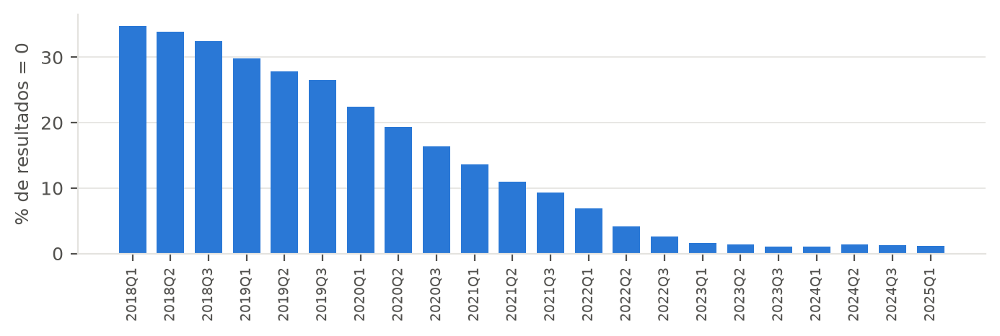

Integração do gasto municipal em Atenção Básica com os indicadores do Ministério da Saúde — Rio Grande do Sul, 2018–2024. Relatório parcial.
Resumo. Este relatório parcial documenta a construção da base: a extração das duas fontes (FINBRA/SICONFI e SISAB), a dimensão de indicadores construída a partir das Notas Técnicas e Portarias, o modelo relacional, a carga com suas verificações de integração e qualidade, as consultas básicas e o levantamento de trabalhos relacionados. A base integra os 497 municípios do RS de 2018 a 2024; a junção pelo código IBGE casa os municípios nos dois sentidos em todos os exercícios, e a mudança de regra de 2022 fica garantida no esquema por chaves estrangeiras compostas. Ao reconstituir os atos normativos, verificamos que o resultado dos indicadores só determinou integralmente o repasse em 2022Q2–2023Q3, o que passa a ser marcado em cada quadrimestre. As análises da pergunta central (consultas avançadas) e a aplicação ficam para a etapa final.
Entre 2020 e 2024, parte do repasse federal para a Atenção Primária à Saúde (APS) dependeu do desempenho dos municípios em sete indicadores assistenciais (Programa Previne Brasil, Portaria GM/MS nº 2.979/2019). Os municípios, por sua vez, declaram ao Tesouro Nacional o que gastam em Atenção Básica. As duas informações são públicas e cobrem o mesmo universo, mas não são disponibilizadas de forma integrada. O objetivo do trabalho foi projetar e implementar uma base que as integre, para os 497 municípios do RS, e usá-la para observar a relação entre o investimento municipal em Atenção Básica e o desempenho assistencial.
A pergunta é de associação, não de causalidade. A subfunção 10.301 reúne recursos próprios, estaduais e federais, enquanto o pagamento por desempenho é uma fração do repasse federal. Há ainda causalidade reversa possível: municípios com melhor desempenho recebiam mais e podiam, por isso, gastar mais.
| Fonte | Conteúdo | Período | Grão | Acesso |
|---|---|---|---|---|
| FINBRA / Tesouro Nacional | Despesa por função e subfunção (Anexo I-E), 5 estágios; população | 2018–2025 | município × ano | CSV do SICONFI (2020–2025); API SICONFI/DCA (2018–2019) |
| SISAB / Ministério da Saúde | Percentual alcançado nos 7 indicadores | 2018Q1–2025Q1 | município × quadrimestre | 14 CSV: 7 indicadores × 2 painéis |
| Notas Técnicas e Portarias | Regras, metas, pesos, ajustes de financiamento | — | indicador × regime | NT 5/2020; NT 11 e 12/2022; NT 13–19/2022; Portarias GM/MS |
| DATASUS e SES-RS | Município → região de saúde → coordenadoria | vigente | município | Base territorial jun/2026; Portaria SES-RS nº 320/2025 |
FINBRA. Os arquivos do portal são CSV em latin-1, separados por ponto e vírgula, com vírgula decimal e três linhas de preâmbulo antes do cabeçalho. Os exercícios de 2018 e 2019 não estavam nos downloads originais; foram obtidos pela API de dados do SICONFI (uma requisição por município, ~1.000 requisições) e gravados no mesmo formato do portal, para que um único leitor sirva aos dois caminhos. Antes de confiar na API, comparamos API e portal num exercício presente nos dois: 3.239 de 3.239 linhas idênticas numa amostra de 16 municípios de 2020.
SISAB. Cada arquivo traz um indicador, com os municípios nas linhas e os quadrimestres nas colunas; a carga despivota esse formato largo. A consulta por indicador retorna os 497 municípios, enquanto a "Visão geral" retorna 489, motivo pelo qual usamos a primeira. O arquivo baixado não informa qual "visão das equipes" o gerou. Identificamos a visão pelo próprio dado: os dados abertos da API DEMAS trazem, para 2024, o resultado nas três visões, e os valores do SISAB coincidem com a visão todas as equipes em 8.946 de 8.946 casos (contra 93,7% para homologadas e 91,2% para válidas). É a visão prevista no anteprojeto. A API não entra no modelo, por cobrir só 2024.
Regras dos indicadores. Nenhuma base entrega a regra, a meta ou o peso de cada indicador. A dimensão de indicadores foi construída a partir do anexo da Nota Técnica nº 11/2022-SAPS/MS, que apresenta cada indicador na forma "de" (NT nº 5/2020-DESF/SAPS/MS) / "para" (regra de 2022), e das fichas individuais (NT nº 13 a 19/2022). A NT 11/2022 foi substituída pela NT nº 12/2022 em julho de 2022, com as mesmas metas e nova regra de escolha do denominador.
Divisão regional. A coordenadoria regional de saúde não consta das fontes. Usamos as 30 regiões de saúde da base territorial do DATASUS e a correspondência região → coordenadoria da Portaria SES-RS nº 320/2025 (18 CRS). O DATASUS ainda usa a numeração antiga de 19 CRS; Cristal e Tupanciretã divergem entre as duas fontes, e a divergência está registrada na tabela de qualidade.
O anteprojeto previa marcar os quadrimestres em que a Portaria GM/MS nº 102/2022 fixou o alcance de indicadores em 100% para fins de financiamento. Ao reconstituir os atos normativos, a situação se mostrou mais ampla, e com consequência direta para a análise:
| Quadrimestres de dados | Regime de cálculo | Efeito no repasse | Ato |
|---|---|---|---|
| 2018Q1–2019Q3 | NT 5/2020 | anterior ao programa | — |
| 2020Q1–2021Q2 | NT 5/2020 | sem efeito (repasse fixado) | Portarias 2.979/2019, 1.740/2020, 166/2021, 2.396/2021 |
| 2021Q3 | NT 5/2020 | parcial (ind. 3–7 fixados) | Portaria 102/2022 |
| 2022Q1 | NT 11/2022 | parcial (ind. 6–7 fixados) | Portaria 102/2022 |
| 2022Q2–2023Q3 | NT 11/2022 → 12/2022 | pleno | — |
| 2024Q1 em diante | NT 12/2022 | posterior ao programa | Portaria 3.493/2024 |
A correspondência dado → parcela para 2020–2021 é inferida da defasagem descrita na NT 11/2022, e o texto
da Portaria 1.740/2020 só foi conferido em fonte secundária; essas ressalvas estão gravadas no campo
observacao de cada ajuste.
O esquema segue a proposta do anteprojeto, com quatro acréscimos justificados pelo que os dados mostraram
(dim_regime, ajuste_financiamento, efeito_financeiro e
log_qualidade) e a coordenadoria normalizada em duas tabelas. As decisões principais:
id_indicador), porque o código do indicador se repete entre versões. São 14 linhas: 7
indicadores × 2 regimes. A meta do pré-natal cai de 60% para 45%; as demais se mantêm; os pesos somam 10.fato_indicador carrega o regime e participa de duas
chaves estrangeiras compostas: (quadrimestre, regime) → dim_periodo e
(id_indicador, regime) → dim_indicador. Um resultado de 2021 não consegue referenciar a versão
de 2022 do indicador. A regra de negócio central do trabalho fica declarada no esquema, sem gatilho.cod_ibge7 é a chave primária, cod_ibge6 é UNIQUE (alvo
da FK de fato_indicador), e CHECK (cod_ibge7 / 10 = cod_ibge6) garante a
relação. A junção casa os 497 municípios nos dois sentidos, em todos os exercícios.pop_municipio), para que o per capita de cada ano use a
população daquele ano.dim_conta.nivel distingue total, função e subfunção. Verificamos que as subfunções de
saúde, incluindo o resíduo FU10 – Demais Subfunções, reproduzem a função 10 – Saúde ao
centavo; o risco de dupla contagem está em somar níveis diferentes, e toda consulta filtra um único nível.dim_periodo.efeito_financeiro e ajuste_financiamento registram a seção 3:
o percentual em fato_indicador é sempre o alcance real, e o que foi considerado no pagamento
fica numa tabela à parte, com o ato normativo.Camada analítica. As escolhas metodológicas da seção 4 do anteprojeto ficam em visões, uma única
vez: despesa no estágio liquidada; desempenho anual como média dos três quadrimestres, associado à
despesa do mesmo exercício; nenhuma média atravessando o corte de regime. Três visões são materializadas por
custo (mv_gasto_anual varre ~853.864 linhas de despesa; mv_serie_estadual
calcula médias ponderadas por quadrimestre; mv_grupo_referencia é uma junção reflexiva de
~500² pares por ano). A aplicação consulta essas visões e não repete lógica analítica.
| Tabela | Linhas | Tabela | Linhas |
|---|---|---|---|
| fato_despesa | 853.864 | dim_conta | 193 |
| fato_indicador | 76.538 | dim_periodo | 22 |
| pop_municipio | 3.976 | dim_indicador | 14 |
| dim_municipio | 497 | ajuste_financiamento | 42 |
| dim_regiao_saude / dim_coordenadoria | 30 / 18 | log_qualidade | 10 |
O dicionário de dados completo, com origem e semântica de cada coluna, está em
docs/dicionario_dados.md.
A carga (carrega.py) recria o esquema e carrega, em ordem, o FINBRA, a divisão regional, o SISAB
e a camada analítica, via COPY, em cerca de 20 segundos. Ela falha, em vez de seguir, se o
conjunto de municípios do FINBRA diferir do SISAB, se aparecer um estágio de despesa desconhecido, se um
arquivo do SISAB não tiver entrada no dicionário de indicadores, ou se um quadrimestre cair fora do regime
do seu arquivo. Ao final, um relatório de verificação lista volumes, cobertura por período e o registro de
inconsistências.
| Verificação | Resultado |
|---|---|
| Junção FINBRA × SISAB pelo código IBGE | 497 ↔ 497 em todos os exercícios, sem sobra |
| Valores nulos no SISAB | 0 em 76.538 células |
| Subfunção 10.301 declarada | 493 a 497 municípios por exercício; 8 lacunas em 3.479 município-exercícios de 2018–2024 |
| Sem a subfunção 10.301 | Barão de Cotegipe (2021) e Tenente Portela (2023): declarações truncadas (21 e 18 linhas). Brochier e Tupandi (2018–2019), Cacequi e Cambará do Sul (2018): declarações completas, com gasto em saúde, mas sem a 10.301. Em todos, gasto_ab fica NULL, não zero |
| Gasto implausível | 26 casos abaixo de 10% da mediana do ano (ex.: R$ 0,71 por habitante, Cambará do Sul, 2021) |
| Visão das equipes do SISAB | "todas as equipes", 8.946/8.946 |
| Visão geral × por indicador | 489 × 497 municípios |
Gasto atípico. Os valores muito baixos ocorrem em municípios cuja participação da 10.301 no gasto em
saúde é de 0% a 14%, contra uma mediana estadual de 69,6% em 2024. Os municípios que, em 2018–2019,
declararam gasto em saúde sem nenhum valor na 10.301 são o caso extremo do mesmo fenômeno. É o padrão descrito por Vieira et al. (2022):
parte do gasto em APS é classificada em outras subfunções, e a 10.301 subestima o gasto real. Esses casos
ficam na base (são o dado declarado) e são listados na visão vw_gasto_atipico e na aplicação.

Zeros no SISAB. Um terço dos resultados de 2018 é exatamente zero; a partir de 2023, cerca de 1%. A queda é contínua, sem degrau em 2022, e acompanha a adesão das equipes ao registro no SISAB. Um zero no início da série frequentemente indica ausência de registro, e não de atendimento, o que reforça a limitação de que os indicadores medem processos registrados.
O arquivo sql/03_consultas_basicas.sql (B1–B10) cobre o primeiro conjunto do anteprojeto:
dicionário dos indicadores; gasto per capita por município e exercício; distribuição do gasto per capita;
composição do orçamento de saúde por subfunção, no estado e em Porto Alegre; resultado de cada indicador por
município e quadrimestre, com a meta da versão vigente; ordenação por desempenho; evolução de cada indicador;
cobertura e completude de cada fonte; agregação por coordenadoria.
| Exercício | Municípios | Mínimo | P10 | Mediana | Média | P90 | Máximo |
|---|---|---|---|---|---|---|---|
| 2018 | 493 | 30,65 | 212 | 617 | 700 | 1.327 | 2.211 |
| 2019 | 495 | 1,66 | 211 | 643 | 731 | 1.374 | 2.809 |
| 2020 | 497 | 3,41 | 247 | 718 | 800 | 1.504 | 3.056 |
| 2021 | 496 | 0,71 | 266 | 791 | 893 | 1.706 | 3.715 |
| 2022 | 497 | 36,88 | 331 | 988 | 1.121 | 2.114 | 4.535 |
| 2023 | 496 | 21,86 | 386 | 1.088 | 1.244 | 2.329 | 5.207 |
| 2024 | 497 | 87,09 | 415 | 1.214 | 1.380 | 2.579 | 4.841 |
Gasto liquidado em Atenção Básica por habitante (R$ correntes). A distribuição é assimétrica (média acima da mediana, P90 cerca de seis vezes o P10), o que motivou a análise por quintis em vez de um coeficiente de correlação. Em 2024, a Atenção Básica respondeu por 39,0% da despesa liquidada em saúde do conjunto dos municípios, contra 47,4% da Assistência Hospitalar e Ambulatorial.
Cabreira et al. (2018) analisaram a despesa municipal em APS dos municípios do RS em 2011–2013 e concluíram que ela acompanha políticas federais de indução mais que fatores locais de demanda; lá o gasto é a variável resposta. Harzheim et al. (2020) apresentam o desenho do Previne Brasil e Massuda (2020) o critica. Costa, Silva e Jatobá (2022), Schönholzer et al. (2023) e Souza et al. (2024) avaliam os indicadores com dados do SISAB em escala nacional, sem variável de gasto e sem tratar a mudança de regra. Soares, Camargos e Noronha (2023) relacionam financiamento e resultados do Previne em Minas Gerais, a partir do repasse federal. Vieira et al. (2022) mostram que o gasto declarado na subfunção 10.301 subestima o gasto em APS, o que fundamenta a nossa limitação sobre a variável de gasto.
O trabalho se diferencia pelo período (2018–2024), pela direção da pergunta (gasto como variável
explicativa), pela análise por quintis e por grupos de referência de porte prevista em vez de correlação simples,
pela ponderação por população e, principalmente, pela modelagem explícita da mudança de regra e do efeito
financeiro de cada período. A lista completa, com DOI, está em docs/trabalhos_relacionados.md.
NTILE, variação anual com
LAG por regime, grupos de referência por porte com junção reflexiva, agregações por
coordenadoria com CTEs encadeadas, médias ponderadas e análise sem municípios pequenos.A preencher pelo grupo: responsável por cada atividade, conforme exigido nas entregas.
| Atividade | Responsável |
|---|---|
| Extração das fontes (FINBRA, SISAB, API) | — |
| Dimensão de indicadores a partir das Notas Técnicas e Portarias | — |
| Modelagem e criação da base | — |
| Levantamento de trabalhos relacionados | — |
| Consultas básicas e avançadas | — |
| Aplicação de visualização | — |
| Relatórios e apresentação | — |
BRASIL. Ministério da Saúde. Portaria GM/MS nº 2.979, de 12 de novembro de 2019. Institui o Programa Previne Brasil.
BRASIL. Ministério da Saúde. Portaria GM/MS nº 3.222, de 10 de dezembro de 2019. Dispõe sobre os indicadores do pagamento por desempenho.
BRASIL. Ministério da Saúde. Portarias GM/MS nº 166, de 27 de janeiro de 2021, e nº 2.396, de 22 de setembro de 2021.
BRASIL. Ministério da Saúde. Portaria GM/MS nº 102, de 20 de janeiro de 2022.
BRASIL. Ministério da Saúde. Portaria GM/MS nº 3.493, de 10 de abril de 2024.
BRASIL. Ministério da Saúde. Nota Técnica nº 5/2020-DESF/SAPS/MS; Notas Técnicas nº 11/2022, nº 12/2022 e nº 13 a 19/2022-SAPS/MS.
CABREIRA, F. S.; RITTER, F.; AGUIAR, V. R.; CELESTE, R. K. Despesas municipais em atenção primária à saúde no Rio Grande do Sul, Brasil: um estudo ecológico. Cadernos de Saúde Pública, v. 34, n. 12, e00150117, 2018. DOI: 10.1590/0102-311X00150117.
COSTA, N. R.; SILVA, P. R. F.; JATOBÁ, A. A avaliação de desempenho da atenção primária: balanço e perspectiva para o programa Previne Brasil. Saúde em Debate, v. 46, n. esp. 8, p. 8-20, 2022. DOI: 10.1590/0103-11042022e801.
HARZHEIM, E. et al. Novo financiamento para uma nova Atenção Primária à Saúde no Brasil. Ciência & Saúde Coletiva, v. 25, n. 4, p. 1361-1374, 2020. DOI: 10.1590/1413-81232020254.35062019.
MASSUDA, A. Mudanças no financiamento da Atenção Primária à Saúde no Sistema de Saúde Brasileiro: avanço ou retrocesso? Ciência & Saúde Coletiva, v. 25, n. 4, p. 1181-1188, 2020. DOI: 10.1590/1413-81232020254.01022020.
RIO GRANDE DO SUL. Secretaria da Saúde. Portaria SES nº 320/2025, Anexo I — Relação dos municípios por Região de Saúde, CRS e Macrorregião.
SCHÖNHOLZER, T. E. et al. Indicadores de desempenho da Atenção Primária do Programa Previne Brasil. Revista Latino-Americana de Enfermagem, v. 31, e4007, 2023. DOI: 10.1590/1518-8345.6640.4009.
SOARES, C. S.; CAMARGOS, M. C. S.; NORONHA, K. V. M. S. Financiamento da atenção primária à saúde e os resultados dos componentes do Programa Previne Brasil em Minas Gerais. Revista Gestão & Planejamento, v. 24, p. 223-240, 2023. DOI: 10.53706/gep.v.24.7962.
SOUZA, C. D. F. et al. Primary care performance measurement in Brazil (Previne Brasil Program), 2022–2023. BMC Health Services Research, v. 24, art. 949, 2024. DOI: 10.1186/s12913-024-11409-x.
VIEIRA, F. S.; ALMEIDA, A. T. C.; SERVO, L. M. S.; BENEVIDES, R. P. S. Gasto total dos municípios em atenção primária à saúde no Brasil: um método para ajuste da despesa declarada de 2015 a 2020. Cadernos de Saúde Pública, v. 38, n. 5, e00280221, 2022. DOI: 10.1590/0102-311XPT280221.